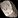
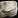
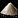

This Engineering leveling guide will show you the fastest way how to level your Engineering skill up from 1 to 300 as inexpensively as possible.
This Engineering leveling guide will show you the fastest way how to level your Engineering skill up from 1 to 300 as inexpensively as possible.
Professions skills are split between expansions now, you'll have a separate skill bar for each expansion. This guide is for the "Vanilla" Engineering skill in the current retail version of World of Warcraft. I have a separate guide for Classic WoW, so if you are looking for that, visit my Classic WoW Engineering Leveling Guide.
Often the materials are based on a case that you will gain one skill point each craft. This won't happen, so you will have to buy a few extra materials while you are leveling your Engineering.
Approximate Materials Required
- 60 x

Rough Stone - 36 x
 Copper Bar
Copper Bar - 20 x

Coarse Stone - 20 x
 Linen Cloth
Linen Cloth - 107 x
 Bronze Bar - 54 Copper Bar + 54 Tin Bar if you have Mining
Bronze Bar - 54 Copper Bar + 54 Tin Bar if you have Mining - 2 x
 Tigerseye
Tigerseye - 30 x
 Heavy Stone
Heavy Stone - 60 x
 Wool Cloth
Wool Cloth - 15 x
 Medium Leather
Medium Leather - 4 x Steel Bar
- 120 x
 Solid Stone
Solid Stone - 161 x
 Mithril Bar
Mithril Bar - 20 x
 Mageweave Cloth
Mageweave Cloth - 40 x Dense Stone
- 195 x
 Thorium Bar
Thorium Bar - 25 x
 Runecloth
Runecloth
Playing WoW Classic?
Visit my Classic WoW Engineering leveling guide 1-300 if you are looking for the Classic WoW guide. Profession skills are split between expansions in the latest World of Warcraft expansion, you'll have a separate skill bar for each expansion, and you can level them separately. This guide is for the "Vanilla" Engineering skill in the current retail version of WoW.
Engineering Trainers
You can learn Engineering from one of the trainers in the main cities of old Azeroth. If you are having trouble finding the trainer just walk up to a guard in any major city and ask where the Engineering trainer is. Asking the guard will place a red marker on your map at the trainer's location.
Horde trainers:
 Roxxik in Orgrimmar.
Roxxik in Orgrimmar.- Engineer Palehoof in Thunder Bluff.
- Danwe in Silvermoon City.
- Franklin Lloyd in Undercity.
Alliance trainers:
 Lilliam Sparkspindle in Stormwind City
Lilliam Sparkspindle in Stormwind City- Springspindle Fizzlegear in Ironforge.
- Tana Lentner in Darnassus.
Engineering Tools
You will need some kind of tool to craft most engineering items. These tools are:
- Blacksmith Hammer - Sold by Engineering or Blacksmith supply vendor.
 Arclight Spanner - Requires 50 skill in Vanilla Engineering to craft.
Arclight Spanner - Requires 50 skill in Vanilla Engineering to craft. Gyromatic Micro-Adjustor - Requires 175 skill in Vanilla Engineering to craft.
Gyromatic Micro-Adjustor - Requires 175 skill in Vanilla Engineering to craft.
To save some bag space, I highly recommend getting a Gnomish Army Knife. It replaces all of these tools, so you only have to carry one item with you.
The Gnomish Army Knife also replaces  Jeweler's Kit, Virtuoso Inking Set,
Jeweler's Kit, Virtuoso Inking Set,  Runed Copper Rod, so if you have any of these in your inventory, you can throw it out.
Runed Copper Rod, so if you have any of these in your inventory, you can throw it out.
Where to get The Gnomish Army Knife
-
You can buy the Ultimate Gnomish Army Knife from the Auction House.
-
If you already learned Draenor engineering, you can craft one Ultimate Gnomish Army Knife for 5 Gearspring Parts. (Craft one Gearspring Parts for 15 x True Iron Ore, 15 x Blackrock Ore. It will actually create 8 Gearspring Parts).
-
You can also craft Gnomish Army Knife if you have Northrend Engineering, but it's usually more expensive to make or buy.
Leveling Engineering
Gnome characters have +15 Engineering skill because of their passive  Engineering Specialization. An extra 15 Engineering skill means recipes stay orange 15 points longer, so you can save a lot of gold by doing lower level recipes for 15 more points.
Engineering Specialization. An extra 15 Engineering skill means recipes stay orange 15 points longer, so you can save a lot of gold by doing lower level recipes for 15 more points.
1 - 100
- 1 - 30
60 x Rough Blasting Powder - 60 Rough Stone
You might even reach 40 with this recipe. You will need the 60 Rough Blasting Powder later, so keep these.
- 30 - 50
30 x Handful of Copper Bolts - 30 Copper BarBuy a Blacksmith Hammer from an Engineering or Blacksmith supply vendor, they are usually near an Engineering or Blacksmithing trainer. (You don't need this if you already have a Gnomish Army Knife)
You will need around 30 Handful of Copper Bolts later, so keep them.
- 50 - 75
30 x Rough Copper Bomb - 60 Rough Blasting Powder, 30 Handful of Copper Bolts
Make yourArclight Spanner between 50-70 and keep it because you will need it later. (You don't need this if you already have a Gnomish Army Knife)
- 75 - 90
20 x
Coarse Blasting Powder - 20 Coarse Stone
You will need 20 of these later.
- 90 - 100
20 x Coarse Dynamite - 20 Coarse Blasting Powder, 20 Linen Cloth
100 - 160
- 100 - 113
13 x Clockwork Box - 39 Bronze Bar
- 113 - 125
Use the Clockwork Box you made.
- 125 - 130
1 x Flying Tiger Goggles - 8 Bronze Bar, 2 Tigerseye
- 130 - 150
30 x Heavy Blasting Powder - 30 Heavy Stone
15 x Whirring Bronze Gizmo - 30 Bronze Bar, 15 Wool ClothYou will need 30 Heavy Blasting Powder and 15 Whirring Bronze Gizmo later, and if you make these you should reach 150 skill points.
- 150 - 160
15 x Bronze Framework - 30 Bronze Bar, 15 Medium Leather, 15 Wool ClothKeep these too. (you will probably gain more than 10 points here)
160 - 216
- 160 - 175
15 x Explosive Sheep - 30 Heavy Blasting Powder, 15 Whirring Bronze Gizmo, 15 Bronze Framework, 30 Wool ClothKeep 5 of these, you might need it if you choose Goblin Engineering at 200.
- 175 - 176
1 xGyromatic Micro-Adjustor - 4 Steel Bar
You will need this tool for some recipes. (You don't need this if you already have a Gnomish Army Knife)
- 176 - 195
60 x Solid Blasting Powder - 120 Solid StoneSave these because you will need them later.
- 195 - 200
7 x Mithril Tube - 21 Mithril BarStop making these when you reach 200, and keep 6 of these, because you might need it you choose Gnomish Engineering at 200.
Engineering has the option at skill level 200 to specialize in Gnomish or Goblin Engineering. You can get the quests from your Engineering trainer. The main difference between both sides is the location of their respective teleporters and the ability of their trinkets. Some items require a specific specialization to use, while other items are crafted by one specialization but are usable by any engineer. Fortunately, most recipes that are crafted by one Specialization can be worn by both.
- 200 - 216
20 x Unstable Trigger - 20 Mithril Bar, 20 Mageweave Cloth, 20 Solid Blasting PowderYou will need these later.
216 - 300
- 216 - 238
40 x Mithril Casing - 120 Mithril BarYou will need these later.
- 238 - 250
20 x Hi-Explosive Bomb - 40 Mithril Casings, 20 Unstable Trigger, 40 Solid Blasting PowderYou will probably reach 255.
- 250 - 260
20 x Dense Blasting Powder - 40 Dense StoneYou might need to make more than 20 to reach 260.
- 260 - 285
25 x Thorium Widget - 75 Thorium Bar, 25 RuneclothThis recipe will be yellow for the last few points, so you might not reach 285. But you can just go to the next step. (you have to make a bit more from the next recipe)
- 285 - 300
20 x Thorium Tube - 120 Thorium BarThis will be green for the last 3 points, so you might have to make more.
I hope you liked this Engineering leveling guide, congratulations on reaching 300!